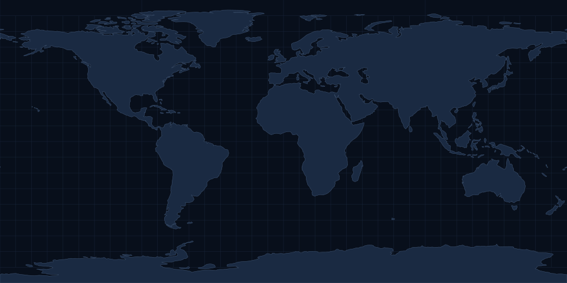

Resources / Threat intelligence
Threat Map
Source-attributed observations. Clear context.
See what was reported, where infrastructure was located, and when the data was updated.
No feed loaded
Checking feed availability. No observations are displayed yet.
- Feed updated (UTC)
- Not available
- Last server check (UTC)
- Not available
- Last valid import (UTC)
- Not available
Observation locations
No observations loaded.

Waiting for feed status…
Points represent approximate infrastructure locations, not attacker identities or routes. Select an observation below for details. Records without coordinates appear only in the list.
Reported observations
Newest first · UTCNo observations loaded.
Sources & attribution
No threat source connected.
Basemap: Natural Earth public-domain geography, packaged by World Atlas (ISC). The map is served locally.
How to read this map
This is a snapshot explorer, not a view of every attack on the internet. Provider priority is not an independent risk assessment. A location can describe hosting infrastructure, a proxy or an approximate geolocation; it does not establish an attacker's physical location.
Feed snapshots older than 15 minutes are marked stale. The page checks once per minute while visible. “Current” describes snapshot freshness, not the time an attack is happening. Empty results do not mean an absence of threats. At most 200 observations are included per snapshot.
Feed updated is the export's generation time. Last server check is the last attempted file read; last valid import is the last successful read and validation, even if the export was unchanged. Each observation has its own source-reported time. Checking or reimporting an old export does not make it fresh.